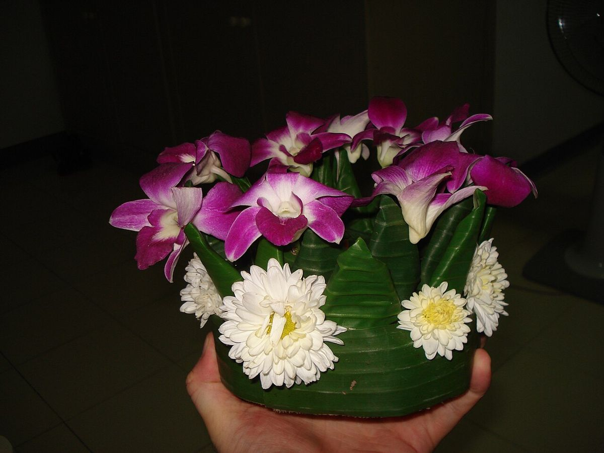
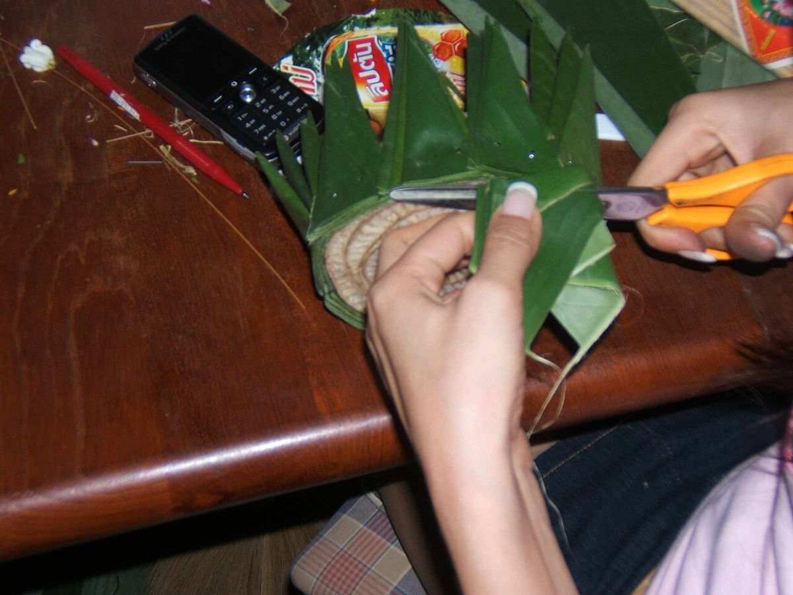
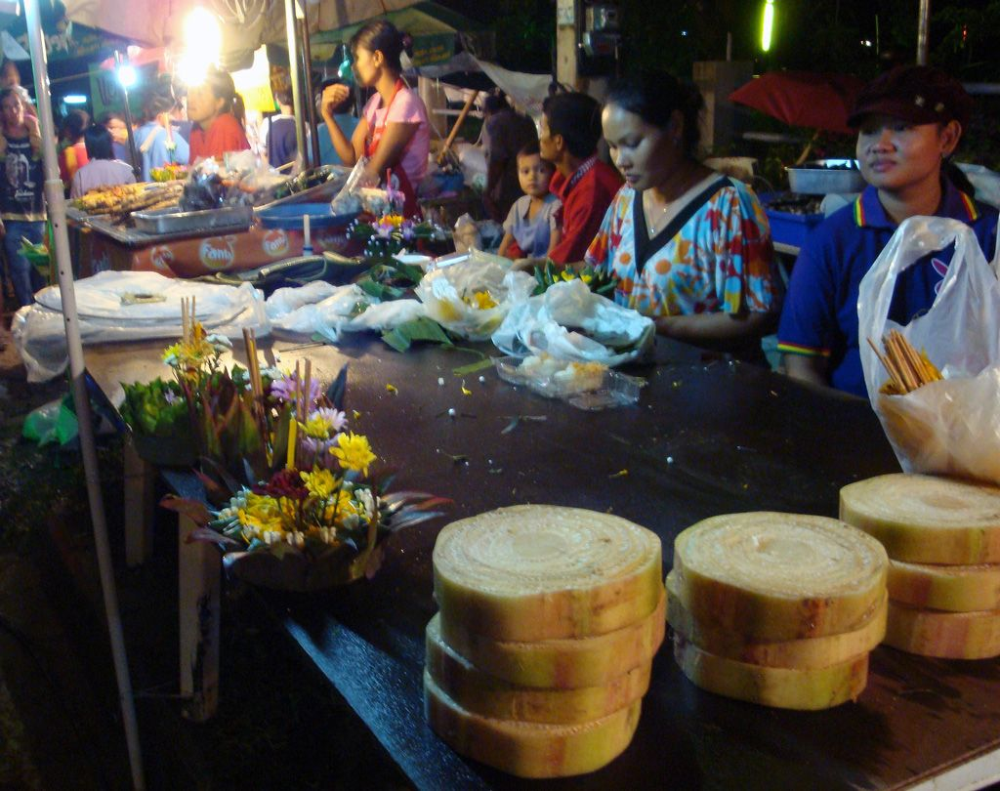
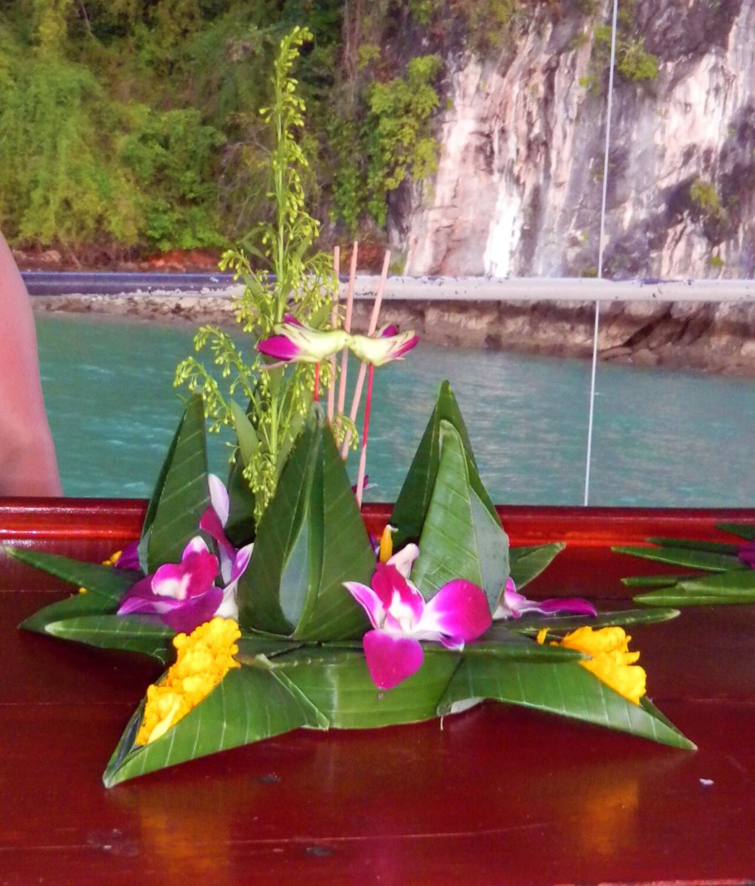
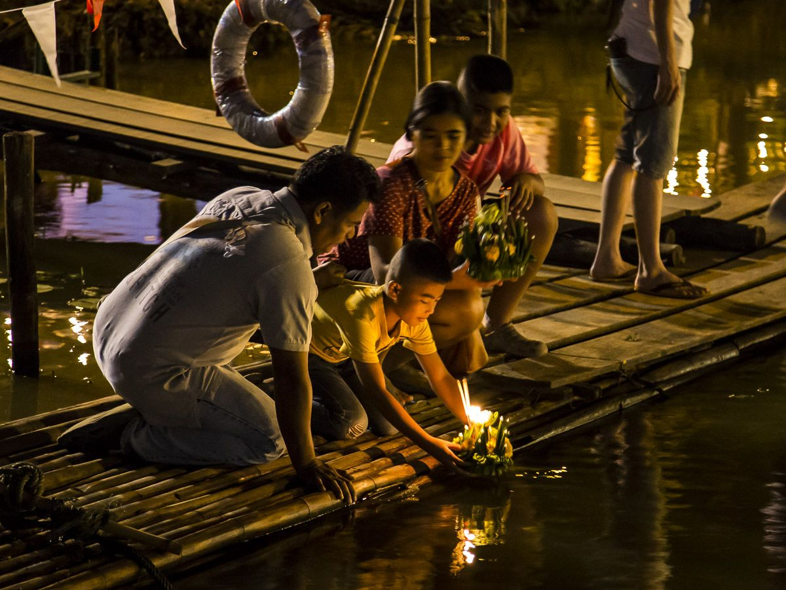
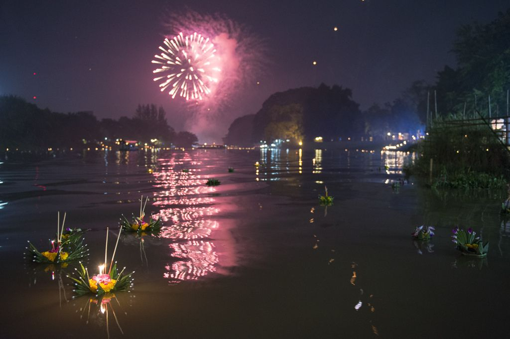
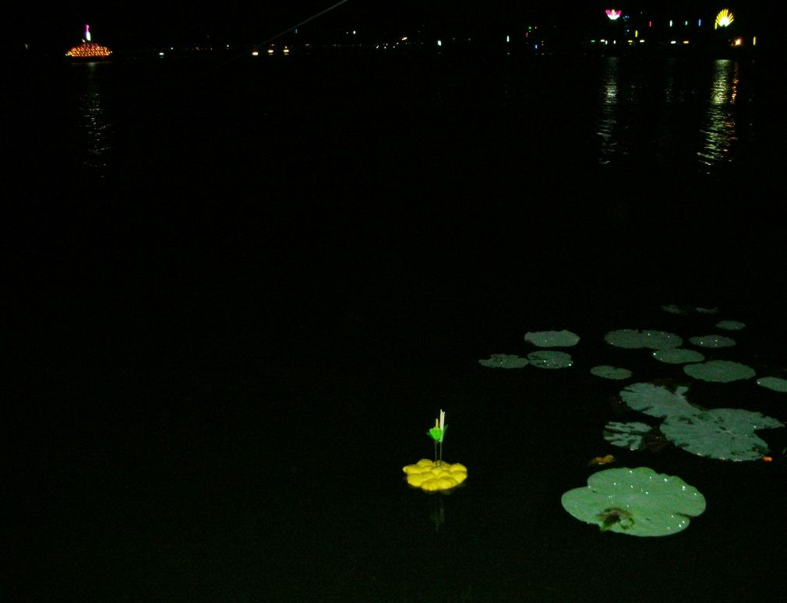
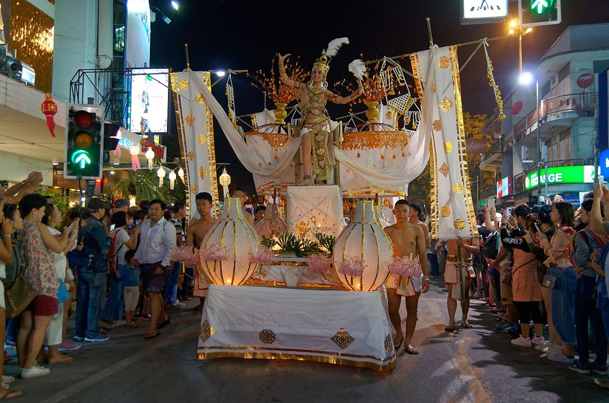
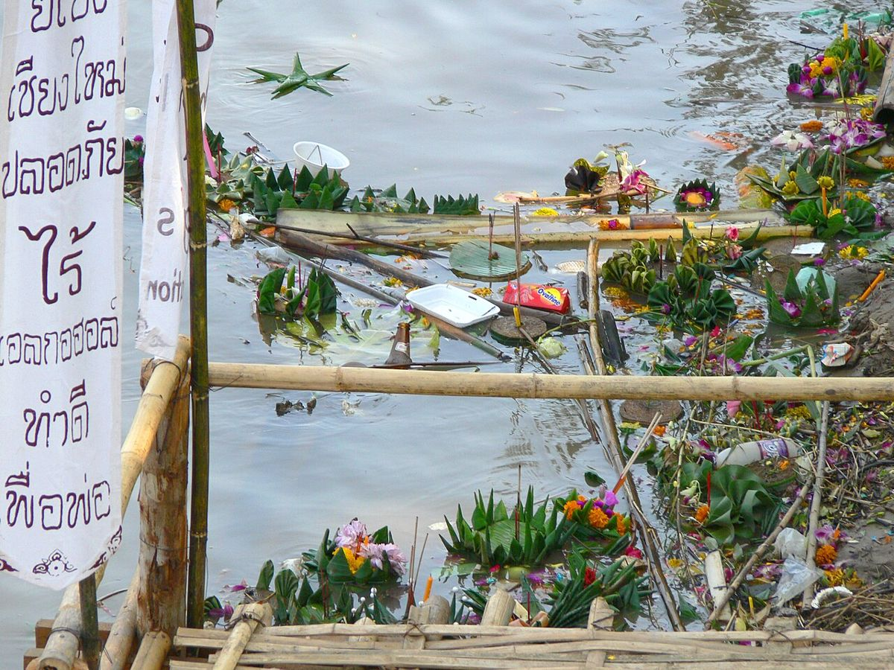
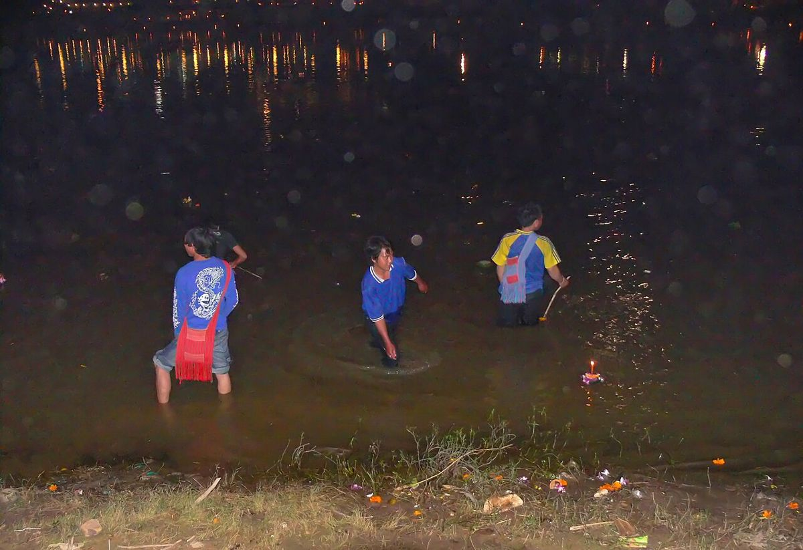

Loy Krathong · Yi Peng · the Ping
Krathong, Drawn
A slice of banana trunk, folded leaf, flowers, a candle and three sticks of incense. How the petals are folded, why it floats, and where the river takes it, drawn with the same sums the water uses.
Tap the water to float one.
Folding the leaf, floating, and the river
motdang.net/sites/krathong
What it is
A lotus of leaf on a slice of trunk
The old base is a slice of banana trunk, หยวกกล้วย yuak kluai, cut about 1.5 to 2 inches thick. Strips of banana leaf, ใบตอง bai tong, are folded into petals and pinned round its rim. The best leaf for folding is from กล้วยตานี, kluai tani: glossy, dark green, tough and soft, hard to tear. On top go flowers, a candle and three sticks of incense. Some people add coins, or a cut fingernail or a few hairs to shed bad luck.
The Department of Cultural Promotion lists the reasons people give for floating one: to honour the Buddha's footprint on the sandbank of the Narmada river in India; to thank Phra Mae Khongkha, the mother of water, and ask her pardon for using and dirtying it; to float bad luck away; to make a wish; to remember the dead. The story of Nang Noppamat, who folded the first leaf krathong for Phra Ruang of Sukhothai, comes from a book that Prince Damrong dated to the reign of Rama III.
In Lanna the night is Yi Peng, the full moon of the second Lanna month. Chiang Mai's National Museum tells of loi khamot, floating fire: Mon people of Hariphunchai, about 1,000 years ago, floated flowers, candles and goods in boat-shaped sapao down the Ping to remember kin they had left in Pegu. Princess Dara Rasmi floated candles on coconut-husk boats in Chiang Mai around 1917–1927; the leaf krathong caught on after 1947, and from 1969 the big-krathong parade has run to Nawarat Bridge.
Fold a petal
Three folds make a point
A strip of banana leaf about 1.5 inches (3.8 cm) wide. Fold the two top corners down so their edges meet in the middle, then fold it in half: this is how a กลีบกุหลาบ, klip kulap or rose petal, begins. Each fold turns part of the leaf over a straight line, half a turn, so it lands face down on the rest.
Fold one corner down to the middle line and the edge turns through 45°. Fold the other corner and the two meet in a point with a right angle at the tip. Fold that in half and the tip closes to 45°. For a rose petal the folded spine is then rolled into a curve, and petals are slipped one into the next and sewn into a long band that wraps the rim like a crown. A craft book from 2012 lists more than 70 named petals, among them กลีบผกา klip phaka, กลีบเล็บมือนาง klip lep mue nang (the lady's fingernail) and a Lanna-style กลีบหน้านาค, the naga face.
The shiny face of the leaf is dark green and the matt back is light. The thin lines are the leaf's veins: each one is a straight line on the flat strip and stays straight through every fold. Only the top of the strip is drawn; the rest, about 15 cm long in all, is trimmed at the base.
Rings
How many petals go round
Petals go round the base in rings, each tucked into the next. How many depends on the size of the base. The rim of a ring is 2πr long, and each petal takes up its width less the part hidden under its neighbour. Each ring here sits a little inside the one below and half a petal round, so the points of one ring fall between the points of the next, as they do in photographs of krathongs.
petals in a ring = ⌊ 2πr ÷ (w × (1 − overlap)) ⌋
Each ring here is 17% smaller across than the one under it.
Will it float
Down until it has pushed aside its own weight
A krathong sinks into the river until the water it pushes aside weighs as much as the krathong. For a round base that gives the depth at the waterline. What is left of the base above the water is how much more it can carry.
Floating is half of it. It also has to stay upright. Tip it a little and the water under it shifts to the low side, pushing back. That push acts through a point called the metacentre, M. While M sits above the centre of all the krathong's weight, G, it rights itself.
depth = mass ÷ (ρwater × πr²) GM = KB + r² ÷ (4 × depth) − KG
G, centre of weightM, metacentre
A wide base is very hard to tip: the r² in the sum grows fast. A narrow base with a tall candle is the one that rolls over.
Nobody has published the density of a fresh slice of banana trunk. Its fibres are denser than water, 1.1 to 1.5 g/cm³; it floats because of the air spaces between its sheaths. The 600 kg/m³ here is the page's guess: move it and see. A ฿1 coin is taken as 3 g.
Downstream
Fast in the middle, slow at the banks
Water drags on the riverbed and the banks, so it runs fastest in the middle of the river and slowest at the edges. Sixty krathongs, let go from one bank, wander out into the current a little at a time. Some get caught where the water barely moves.
speed = umax × (1 − |2y ÷ W|p)
driftingcaught at the bank
At Nawarat Bridge the Royal Irrigation Department's gauge, P.1, has measured the Ping since 1921. Its November average is about 62 m³ of water a second. At a usual November flow the river there is about 80 m wide, and the water moves 0.5 to 0.7 m/s on average across it, worked from the department's rating curve and its 2025 survey of the riverbed. That is 2 km or so an hour.
A bigger p means an even current across most of the river with the slowing squeezed against the banks. The average speed across the river is umax × p ÷ (p + 1). Krathongs that make it downstream pile up at the Tha Wang Tan weir, where volunteers clear them.
The river is drawn 80 m wide. Each krathong takes a small random step across the current every moment, so where it ends up is luck as well as speed.
The morning after
Counted the next day
Bangkok counts the krathongs it pulls out of its rivers and canals the next morning. In 2015 it collected 825,614; in 2025, 391,027, 53% fewer. Foam was 8.6% of the count in 2015 and its lowest share, 1.6%, came in 2024.
naturalfoambread
In 2025 the city counted bread krathongs on their own for the first time: 39,103. The city's environment office gives banana trunk and leaf about 14 days to break down, bread and ice-cream cones about 3 days, and foam about 50 years. A search of Thai and English news from 2013 to 2025 turned up no count for Chiang Mai.
Counts from Bangkok Metropolitan Administration figures as reported by Thai PBS, Sanook, InfoQuest, Thairath, PPTV, Khaosod English and the Bangkok Post. 2015 and 2016 are from English-language reports.
2026
Tuesday 24 November
Loy Krathong 2026 falls on Tuesday 24 November, the fifteenth night of the waxing moon of the twelfth month. Chiang Mai city's Yi Peng runs 23 to 25 November:
Yi Peng tickets · Klook Paid link: this site earns a fee if you book.
In 2025 the city floated from Tha Phae Gate, Tha Phae Road, the municipal offices, the Mae Kha canal and Si Khong landing, and from the foot of Nawarat Bridge. The municipality ties bamboo rafts on the Ping near its offices for people to float from.
The city has asked hotels to stop guests letting sky lanterns go inside the city.
Pictures
Krathongs, made and floated









.jpg){kind=link}










Words
the float
to float a krathong; the festival
banana trunk, the base
banana leaf
the banana whose leaf folds best
petal
rose petal, folded and rolled
a folded petal, often stacked in threes
a set of three stacked petals
pin
incense stick
candle
to shed bad luck
the mother of water
full moon of the second Lanna month
Lanna: floating fire
Lanna: a boat-shaped krathong loaded with gifts
Lanna: a small krathong
a big parade krathong
Nawarat Bridge
Sources
Where the facts on this page come from.
- กรมส่งเสริมวัฒนธรรม (Department of Cultural Promotion), ลอยกระทง, 2014
- Chiang Mai University, ลอยกระทง (Creative Knowledge), 4 Nov 2021
- Chiang Mai University Library, การเข้ามาของประเพณีลอยกระทง
- กรมศิลปากร, Chiang Mai National Museum, ประเพณียี่เป็ง, 2020
- Prince of Songkla University Library, วิธีการทำกระทง
- ThaiGoodView, การพับใบตองแบบต่าง ๆ, 29 Nov 2009
- TCDC Resource Center, ม้วน พับ จับจีบ เย็บกลีบใบตอง (2012), contents
- Suan Dusit University, ศิลปะประดิษฐ์กับงานใบตองสด, 2023
- กรมประชาสัมพันธ์, ประเพณีลอยกระทง, 2026
- Royal Irrigation Department, hydro-1, station P.1 Nawarat Bridge: monthly flow, rating curves, cross-sections
- University of Hamburg Botanical Garden, banana pseudostems, 15 Jan 2025
- PPTV, Loy Krathong 2026 date, 2 Oct 2026
- Chiangmai News, ประเพณีเดือนยี่เป็งเชียงใหม่ 2569, 23 Sep 2026
- Thansettakij, Chiang Mai Yi Peng 2025 venues, 4 Nov 2025
- Chiang Mai Public Relations Office, ยี่เป็งริมปิง, 5 Nov 2025
- Thairath, rafts on the Ping for floating, 18 Nov 2021
- Chiang Mai CityLife, the aftermath of Loy Krathong (Tha Wang Tan weir), 19 Nov 2013
- Thai PBS, Bangkok krathong count 2017, 4 Nov 2017
- Thai PBS, Bangkok krathong count 2018, 23 Nov 2018
- Thai PBS, Bangkok krathong count 2019, 12 Nov 2019
- Thai PBS, Bangkok krathong count 2020, 1 Nov 2020
- Sanook, Bangkok krathong count 2021, 20 Nov 2021
- InfoQuest, Bangkok krathong count 2022, 9 Nov 2022
- Thairath, Bangkok krathong counts 2023 and 2024, 16 Nov 2024
- PPTV, Bangkok krathong count 2025, 6 Nov 2025
- Khaosod English, Bangkok krathong count 2016, 15 Nov 2016
- Bangkok Post, Bangkok krathong count 2015
- Thai PBS, how long krathong materials take to break down, 8 Nov 2022
- US Naval Observatory, moon phases 2026